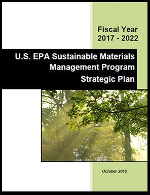
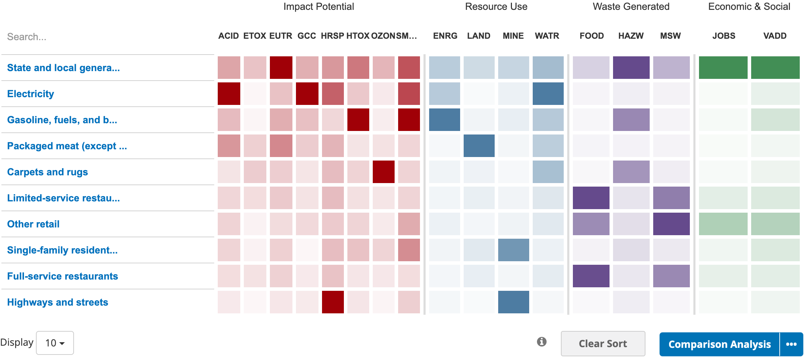
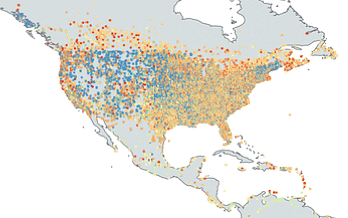

The website focuses on providing maps and data visualizations that combine industry and environmental data using Embeddable IO Widgets.
Community Apps for Life Cycle Assessment (LCA)
Sustainable Materials Management (SMM) is a systemic approach to using and reusing materials more productively over their entire life cycle. It represents a change in how our society thinks about the use of natural resources and environmental protection. By looking at a product's entire life cycle, we can find new opportunities to reduce environmental impacts, conserve resources, reduce costs and attract new industries.
Companies like Amazon and General Motors are using the US Environmentally Extended Input-Output (USEEIO) Models to analyze economic and environmental impacts across all economic sectors
for community planning, business development and environmental education using interactive interfaces like the Sustainable Materials Management Prioritization Tools.
The new online tools foster informed decisions while creating connections that turn waste streams into revenue streams to lower the cost of material input during production.
What's new:
Amazon is using USEEIO to reduce their carbon footprint to net zero by 2040. - Overview / Details
Microsoft's goal is 2030, followed by removing all their carbon emissions since 1975 by 2050. - Learn More
More about who's using the USEEIO modeling tool
Upcoming Events and Internships
During the summer of 2020, Georgia communities are participating in our Life Cycle App Ideas Challenge to set objectives and priorities. Georgia Tech interns are updating modules for local and regional analysis. In the Spring of 2021, we'll expand on the new community tools during the Code for America Sustainable Communities Web Challenge which will provide $10,000 in awards. Learn More and Register.What's new:
Amazon is using USEEIO to reduce their carbon footprint to net zero by 2040. - Overview / Details
Microsoft's goal is 2030, followed by removing all their carbon emissions since 1975 by 2050. - Learn More
More about who's using the USEEIO modeling tool

Sustainable Materials Management Objectives
- Decrease the disposal rate, which includes source reduction, reuse, recycling and prevention;
- Reduce the environmental impacts of materials across their life cycle;
- Increase socio-economic benefits; and
- Increase the capacity of state and local governments, communities and key stakeholders to adopt and implement SMM policies, practices and incentives.
Statewide Input-Output Modeling
View our new embeddable US EEIO charts - Get Involved!The screenshot below is from the EPA's new Sustainable Materials Management Prioritization Tool Suite which uses the USEEIO model.

View Latest Widget | How is this chart generated? (Python example) | Layout Mockup
| Positive Outcomes | Adverse Environmental Impacts |
|---|---|
|
1. Value-Added
2. Quality Jobs 3. Clean Air 4. Clean Water 5. Clean Energy 6. Local Suppliers 7. Green Materials 8. Inclusive Design 9. Improves Health 10. Creates Beauty These 10 positive outcomes encompass the 7 petals of the Living Community Challenge - Learn More. |
Environmental
Acid Rain (ACID)
Freshwater Ecotoxicity (ETOX) Water Eutrophication (EUTR) Global Climate Change (GCC) Respiratory Effects (HRSP) Toxic to Humans (HTOX) Ozone Depletion (OZON) Smog Formation (SMOG)
Resource Use
Energy Use (ENRG)
Land Use (LAND) Minerals and Metals (MINE) Water Use (WATR) Waste Generated Food Waste (FOOD) Hazardous Waste (HAZW) Municipal Solid Waste (MSW) |
Material Flow - Sankey Charts
View Chart StartersSUPPLIERS (Input)
BUYERS (Output)
LOCAL INDUSTRIES
All The Places API

All The Places - Over 450 spiders and scrapers pull data nightly from sites that post their locations online.
Using similar data harvesting techniques and APIs like Google Places, Google Knowledge Graph and DiffBot,
material input-output requests could be shared using CSV files, HTML posts and API feeds.Example: Your construction contract has a requirement to use 50% reclaimed lumber. Share a spreadsheet documenting how much lumber you need and when you need it. Groups like the Lifecycle Building Center retrieve lumber after film productions and can watch for taredown dates that fit your schedule.
In addition, census data from uszipcode datasets, will be combined with payroll, establishment and employment counts from zip code industry data to visualize impacts using Embeddable IO widgets.
Publish your Inventory and Wishlist Data